صفحه ۱۳۲
چیدمان Flexbox فلکس یک مدل طرحبندی در CSS است که برای ایجاد طرحهای منعطف، واکنشگرا و یک بعدی استفاده میشود. فلکس توانایی ایجاد یک چیدمان افقی یا عمودی را برای عناصر صفحه دارد؛ بهعلاوه امکان تراز کردن عناصر و توزیع خودکار فضا را به توسعهدهنده میدهد. طرحهایی که توسط flexbox ایجاد میشوند، با اندازههای مختلف صفحه نمایش سازگاری خواهند داشت (جدول 10).
تنظیم ویژگیهای عنصر والد برای چینش افقی یا عمودی عناصر فرزند در یک عنصر مشخص، از مدل فلکس استفاده میشود. بدین منظور ویژگی display با مقدار Flex برای عنصر والد بهکار میرود. در حالت پیشفرض این کار باعث ایجاد چیدمان افقی برای فرزندان عنصر والد میگردد.
برای فعالکردن Flexbox کافی است ویژگی زیر را به عنصر والد اضافه کنید:
felx-direction: این ویژگی برای تعیین جهت چینش عناصر، بهصورت افقی یا عمودی استفاده میشود.
مقادیر این ویژگی در جدول 10 مشخص شده است.
جدول 10 مقادیر ویژگی flex-direction و تأثیر آنها روی نحوه چینش عناصر
مقدارrow
افقی (پیش فرض)
افقی (راست به چپ)
flex-direction:row
flex-direction:row-reverse
توضیح
box3
box2
box1
box1
box2
box3
مقدارcolumn
عمودی از بالا به پایین
عمودی از پایین به بالا
flex-direction:column
flex-direction:column-reverse
box1
box3
توضیح
box2
box2
box3
box1
صفحه ۱۳۳
felx-wrap: گاهی پهنای صفحه به اندازهای نیست که همه عناصر در کنار یکدیگر قرار بگیرند. ویژگی flex-wrap مشخص میکند که عناصر اضافی به سطر بعد منتقل شوند یا همگی در همان سطر فشرده شوند (جدول11).
جدول 11 مقادیر ویژگی felx-wrap
مقدارwrap
توضیح
انتقال به سطر بعد
عدم انتقال به سطر بعد
felx-folw: ویژگی flex-flow ترکیب flex-direction و flex-wrap است. بهجای نوشتن دو خط کد میتوان هر دو ویژگی را در یک خط تنظیم نمود. مانند زیر:
{.container
;flex-flow: row wrap
}
justify-content: این ویژگی تراز عناصر و نحوه توزیع فضای خالی بین عناصر را در راستای محور اصلی کنترل میکند (جدول 12).
جدول 12 مقادیر ویژگی justify-content
مقدار
توضیحات
مقدار
توضیحات
چینش عناصر در سمت
ایجاد فضای خالی به میزان برابر در اطراف هر
چپ
عنصر
چینش عناصر در سمت
فضای خالی برابر بین عناصر (عنصر اول و آخر
راست
به لبهها میچسبند)
فضای خالی برابر در بین عناصر و همچنین بین
چینش عناصر در مرکز Space-evenly
عناصر و لبهها
صفحه ۱۳۴
align-items: ویژگیalign-items در Flexbox برای ترازکردن عناصر در راستای محور متقاطع (عمود بر محور اصلی) استفاده میشود. به کمک این ویژگی میتوان عناصر را در بالا، پایین و وسط یک سطر قرار داد (شکل 26).
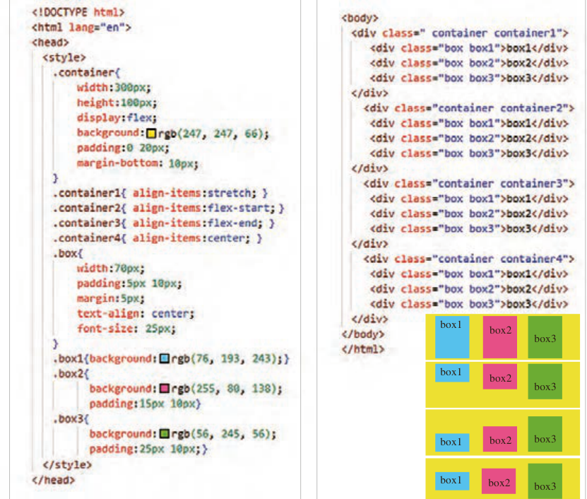
box1
box2
box3
box1
box2
box3
box3
box2
box1
box1
box2
box3
شکل 26
جدول 13 مقادیر ویژگی align-items
مقدارStretch
flex-start
flex-end
center
بهصورت کشیده درون
در بالای عنصر والد قرار
در پایین عنصر والد قرار
در وسط عنصر والد
توضیح
عنصر والد قرار میگیرد
میگیرد.
میگیرد.
قرار میگیرد.
(پیشفرض)
صفحه ۱۳۵
طرح بندی صفحات با Flexbox تعیین چیدمان عناصر منوی ناوبری با استفاده از Flexbox
کار کارگاهی
فایل index.html را باز کنید و تغییرات زیر را درون آن انجام دهید:
1 عناصر زیر را درون برچسب <nav> بعد از برچسب <ul/> اضافه کنید و درون آن آیکن سبد خرید و عبارت «ورود | ثبت نام» را قرار دهید:
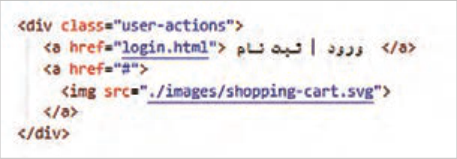
برای تهیه آیکن سبد خرید به سایت svgrepo.com مراجعه کنید و عبارت shopping-cart را جستوجو کنید. یک سبد خرید دلخواه را انتخاب کرده و سپس با کلیک روی گزینه Edit vector، تصویر را ویرایش نمایید. اندازه آیکن را روی مقدار حداقل تنظیم کنید. سپس روی دکمه Export کلیک کنید. یک فایل svg دانلود میشود. این فایل را با نام shopping-cart.svg در پوشه تصاویر ذخیره کنید.
2 استایل نوار ناوبری (.top-menu) را بهصورت شکل زیر تنظیم کنید:
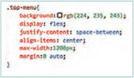
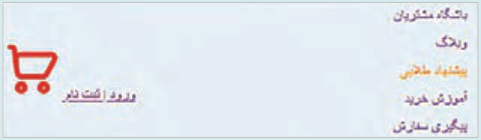
ویژگی flex: display، نوار ناوبری را به یک نگهدارنده فلکس تبدیل میکند تا آیتمهای درون آن (لیست منو در سمت راست و بخش user-action در سمت چپ) به صورت افقی چیده شوند.
ویژگی ;space-between: justify-content، لیست منو و بخش user-actions را به صورت افقی در دو انتهای نگهدارنده قرار میدهد.
ویژگی align-items: center باعث میشود که عناصر درون نگهدارنده فلکس در راستای عمودی در مرکز قرار گیرند.
ویژگی max-width: 1200px، حداکثر پهنای نوار ناوبری را برابر ۱۲۰۰ پیکسل قرار میدهد.
این مقداردهی باعث میشود که نوار ناوبری در صفحه نمایشهای بزرگ، بیش از حد کشیده نشود.
ویژگی margin:0 auto برای قرار گرفتن محدوده نوار منو در وسط صفحه استفاده میشود.
صفحه ۱۳۶
3 استایل عناصر درون برچسب <ul> را به شکل زیر تنظیم کنید:
ویژگی display:flex برای چیدمان افقی عناصر درون برچسب <ul> استفاده شده است و ویژگی justify-content فضای بین عناصر را به شکل مناسب توزیع مینماید.
ویژگی margin-left:25px فاصله هر عنصر منو را از عنصر سمت چپ مشخص می نماید.
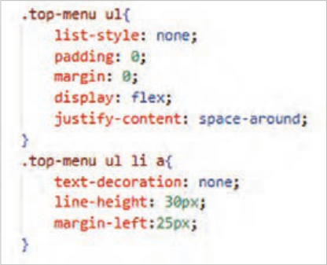
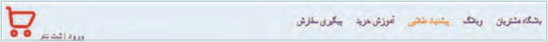
4 استایل بخش user-actions را به شکل زیر تنظیم کنید:
بهکارگیری ویژگی display:flex موجب نمایش دو عنصر «ورود|ثبت نام» و سبد خرید به صورت افقی میشود و ویژگی align-items:Center این عناصر را در راستای محور عمودی در وسط ناحیه user-actions نمایش میدهد.
پهنای تصویر سبد خرید باید به اندازه 25 پیکسل و فاصله آن از سمت چپ (margin-left) باید با مقدار صفر تنظیم شود.
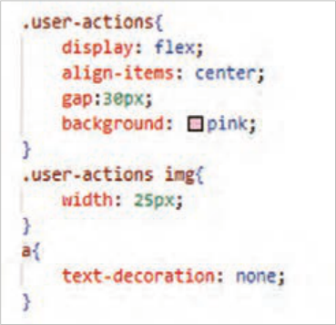
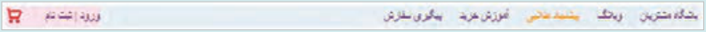
صفحه ۱۳۷
رنگهای پس زمینه را از کلاسهای top-menu، user-actions حذف کنید تا نتیجه زیر حاصل شود
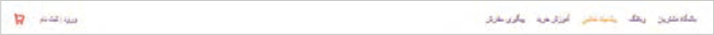
ایجاد بخش اصلی صفحه بعد از طراحی بخش هدر سایت، نوبت به طراحی محتوای اصلی صفحه، شامل بخشهای «جدیدترین محصولات» و «خدمات ویژه» میرسد.
برای طراحی بخش اصلی صفحه از برچسب <main> استفاده میشود. این برچسب باید بعد از برچسب <header/> و قبل از <body/> قرار گیرد.
محتوای نواحی «جدیدترین محصولات» و «خدمات ویژه» باید درون عنصر <main> واقع شود.
طراحی بخش «جدیدترین محصولات» با استفاده از Flexbox
کار کارگاهی
1 یک برچسب <main> بعد از برچسب <header/> درج کنید و درون آن یک عنصر <section> قرار دهید. یک عنصر <section> با کلاس container درون عنصر <main> ایجاد کنید. این عنصر باید حاوی یک عنوان (h2) و یک عنصر نگهدارنده (div) برای نگهداری کارت محصولات باشد. عنوان «جدیدترین محصولات» را درون تگ <h2> بنویسید.
2 یک کلاس با عنوان products به عنصر <div> اختصاص دهید و درون عنصر products کارت محصولات را قرار دهید. کارت محصول را توسط یک عنصر با کلاس product-card ایجاد کنید. هر کارت حاوی تصویر، عنوان و قیمت محصول است.
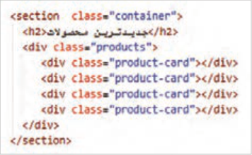
3 برای آنکه مجموعه تصویر، عنوان و قیمت قابل کلیک باشد، کل محتوای کارت را درون برچسب <a> قرار دهید. تصمیمگیری در خصوص چیدمان ستونی تصویر، عنوان و قیمت محصول در تنظیمات عنصر <a> انجام میشود.
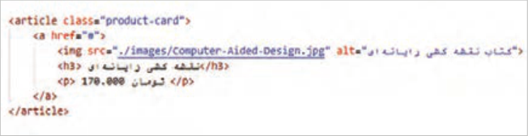
کارت محصول
صفحه ۱۳۸
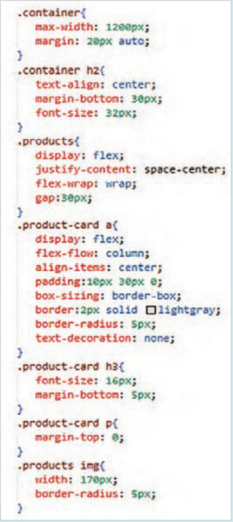
محتوای سه کارت دیگر را نیز مشابه کد صفحه قبل بنویسید. ویژگی عناصر را بهصورت تدریجی به صفحه اضافه کنید و نتیجه هر تغییر را در مرورگر بررسی کنید.
ویژگی max-width حداکثر پهنای ناحیه نگهدارنده را مشخص میکند.
ویژگی margin:20px auto عنصر نگهدارنده را در راستای افقی در وسط صفحه قرار میدهد.
ویژگی display:flex توزیع کارتهای موجود در عنصر products را توسط تکنیک فلکس انجام میدهد.
ویژگی justify-content:center کارتها را در وسط ناحیۀ نگهدارنده توزیع میکند.
ویژگی flex-wrap:wrap باعث تغییر چیدمان عناصر در هنگام کوچکتر شدن پهنای دستگاه میگردد. بهطوریکه کارت محصولات به سطر بعدی منتقل شوند.
ویژگی gap فاصله بین کارت محصولات را مشخص میکند.
با توجه به اینکه مجموعه «تصویر، عنوان و قیمت محصول» درون عنصر <a> قرار گرفته است، پس تنظیم چیدمان ستونی این عناصر توسط انتخابگر .product-card a انجام میشود.
ویژگی flex-direction:column چیدمان عناصر را بهصورت ستونی انجام میدهد.
ویژگی align-items:center تراز عناصر را در راستای محور عمودی تنظیم میکند.
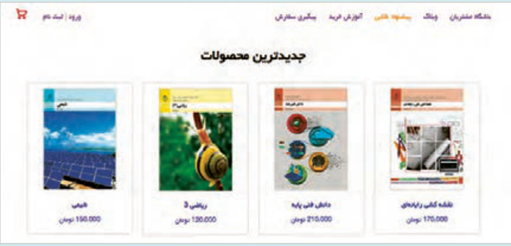
Page 132
Flexbox layout Flex is a layout model in CSS used to create flexible, responsive, one-dimensional designs. Flex can create a horizontal or vertical layout for page elements; it also lets the developer align elements and distribute space automatically. Designs created with flexbox will adapt to different screen sizes (Table 10).
Setting parent element properties for horizontal or vertical arrangement of child elements In a given element, the flex model is used. To do this, the display property with the value Flex is applied to the parent element. By default this creates a horizontal layout for the children of the parent element.
To enable Flexbox, it is enough to add the following property to the parent element:
felx-direction: this property is used to set the direction of arranging elements, horizontally or vertically.
The values of this property are shown in Table 10.
Table 10 Values of the flex-direction property and their effect on how elements are arranged
Valuerow
Horizontal (default)
Horizontal (right to left)
flex-direction:row
flex-direction:row-reverse
Explanation
box3
box2
box1
box1
box2
box3
Valuecolumn
Vertical from top to bottom
Vertical from bottom to top
flex-direction:column
flex-direction:column-reverse
box1
box3
Explanation
box2
box2
box3
box1
Page 133
felx-wrap: sometimes the page width is not enough for all elements to sit next to each other. The flex-wrap property specifies whether extra elements move to the next row or all are squeezed into the same row (Table 11).
Table 11 Values of the felx-wrap property
Valuewrap
Explanation
Move to the next row
Do not move to the next row
felx-folw: the flex-flow property combines flex-direction and flex-wrap. Instead of writing two lines of code, you can set both properties in one line. As below:
{.container
;flex-flow: row wrap
}
justify-content: this property controls the alignment of elements and how empty space is distributed between elements along the main axis (Table 12).
Table 12 Values of the justify-content property
Value
Explanation
Value
Explanation
Arrange elements on the
Create equal empty space around each
left
element
Arrange elements on the
Equal empty space between elements (the first and last
right
elements stick to the edges)
Equal empty space between elements and also between
Arrange elements in the center Space-evenly
elements and the edges
Page 134
align-items: the align-items property in Flexbox is used to align elements along the cross axis (perpendicular to the main axis). With this property you can place elements at the top, bottom, and middle of a row (Figure 26).
box1
box2
box3
box1
box2
box3
box3
box2
box1
box1
box2
box3
Figure 26
Table 13 Values of the align-items property
مقدارStretch
flex-start
flex-end
center
Stretched inside
Placed at the top of the parent
Placed at the bottom of the parent
In the middle of the parent
Explanation
the parent element
element.
element.
element.
(default)
Page 135
Page layout with Flexbox Setting the layout of navigation menu elements using Flexbox
Workshop
Open the index.html file and make the following changes in it:
1 Add the following elements inside the <nav> tag after the <ul/> tag and place the shopping cart icon and the phrase “Login | Sign up” inside it:
To get a shopping cart icon, go to the site svgrepo.com and search for shopping-cart. Choose a shopping cart you like, then click Edit vector to edit the image. Set the icon size to the minimum value. Then click the Export button. An svg file is downloaded. Save this file as shopping-cart.svg in the images folder.
2 Set the style of the navigation bar (.top-menu) as in the figure below:
The flex: display property turns the navigation bar into a flex container so that the items inside it (the menu list on the right and the user-action section on the left) are arranged horizontally.
The ;space-between: justify-content property places the menu list and the user-actions section horizontally at the two ends of the container.
The align-items: center property makes the elements inside the flex container centered vertically.
The max-width: 1200px property sets the maximum width of the navigation bar to 1200 pixels.
This setting keeps the navigation bar from stretching too much on large displays.
The margin:0 auto property is used to center the menu bar area on the page.
Page 136
3 Set the style of the elements inside the <ul> tag as follows:
The display:flex property is used for horizontal layout of elements inside the <ul> tag, and the justify-content property distributes the space between elements appropriately.
The margin-left:25px property sets the distance of each menu element from the element on its left.
4 Set the style of the user-actions section as follows:
Using the display:flex property shows the two elements “Login|Sign up” and the shopping cart horizontally, and the align-items:Center property shows these elements centered vertically in the user-actions area.
The shopping cart image width should be 25 pixels and its left margin (margin-left) should be set to zero.
Page 137
Remove the background colors from the top-menu and user-actions classes so you get the result below
Creating the main section of the page After designing the site header section, it is time to design the main page content, including the “Newest products” and “Special services” sections.
To design the main section of the page, use the <main> tag. This tag must be placed after the <header/> tag and before <body/>.
The content of the “Newest products” and “Special services” areas must be inside the <main> element.
Designing the “Newest products” section using Flexbox
Workshop
1 Insert a <main> tag after the <header/> tag and place a <section> element inside it. Create a <section> element with the class container inside the <main> element. This element should contain a heading (h2) and a container element (div) to hold the product cards. Write the title “Newest products” inside the <h2> tag.
2 Assign a class named products to the <div> element and place the product cards inside the products element. Create the product card with an element that has the class product-card. Each card contains the product image, title, and price.
3 So that the set of image, title, and price is clickable, place the entire card content inside an <a> tag. Decisions about the column layout of the product image, title, and price are made in the settings of the <a> element.
Product card
Page 138
Also write the content of three other cards like the code on the previous page. Gradually add element properties to the page and check the result of each change in the browser.
The max-width property sets the maximum width of the container area.
The margin:20px auto property centers the container element horizontally on the page.
The display:flex property distributes the cards in the products element using the flex technique.
The justify-content:center property distributes the cards in the center of the container area.
The flex-wrap:wrap property changes the layout of elements when the device width gets smaller, so that product cards move to the next row.
The gap property sets the spacing between product cards.
Because the set “product image, title, and price” is inside the <a> element, the column layout of these elements is set with the selector .product-card a.
The flex-direction:column property lays out the elements in a column.
The align-items:center property sets the alignment of elements along the vertical axis.